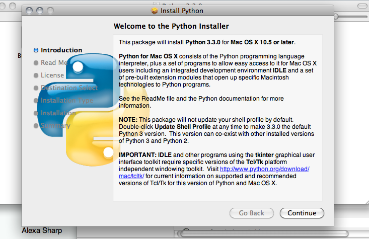
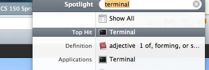
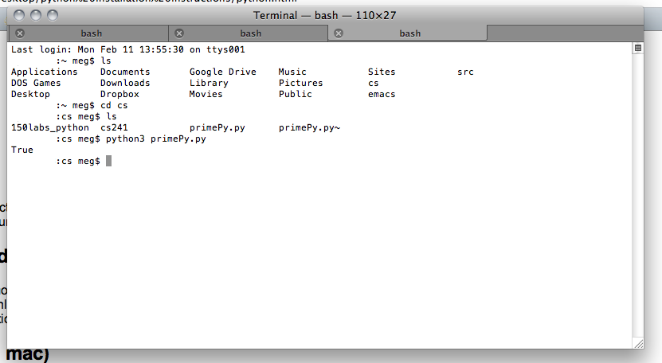
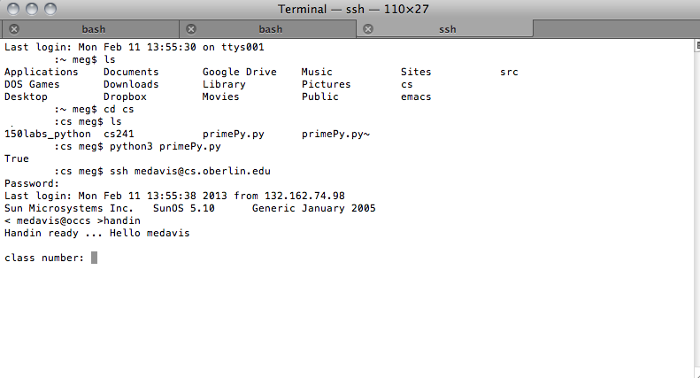

Installing Python 3
- For mac: Go here to get Python 3.
- Download Python 3.3.0.
- Double click on the Python.mpkg file (inside of the .dmg file you just downloaded); you'll be greeted with a screen that looks something like this:

- Follow the installation instructions.
- You now have python on your computer! Yay!
Installing Komodo Edit
- Click here to download Komodo Edit.
- Make sure that you are downloading the free version, and not the IDE.
- Follow the installer's instructions!
- To run Komodo, you can just find it in your applications, by searching on spotlight, etc!
- NOTE: It can take a while for Komodo to start up for the first time.
Using Terminal (on a mac)
Type Terminal into spotlight, like this:

Alternatively, you can go to Appliations>Terminal. To run python programs, type "python3 progName.py", or whatever the name
of your program is. It'll run as such.

Submitting labs remotely (on a mac)
- Open terminal.
- To copy files onto the CS server: if your files are in the directory "lab1", you can type: "scp -r lab1 your_username@cs.oberlin.edu:~/cs150" to
copy all of the files into your CS150 folder. You can replace lab1 with whatever the name of your path is.
- Type "ssh your_username@cs.oberlin.edu". Replace your_username with the username you use to log into CS machines.
- Type "cd cs150", or whatever the name of your 150 directory is.
- Assuming lab1 is already in there, type "handin".
- You should be prompted for a class number, assignment number, and the directory of your submission. Your class number is 150, your
assignment number is 1 (not 01, lab01, or lab1), and the directory of your submission is whatever you named it! So,
usually just "lab1".
- You should get confirmation that the lab was successfully handed in. You can also type "lshand" into the terminal to see your
submitted assignment.

- To exit OCCS, type "exit".